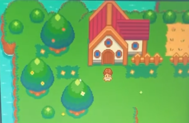
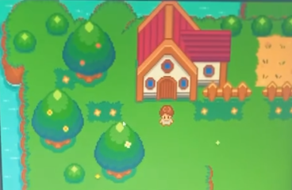

Biography
Alyssa Favorito is a New-Jersey-born 3D modeler, artist, editor, front-end software developer, and writer with experience in programs such as Maya, Blender, After Effects, Cinema4D, Procreate, Photoshop, and Visual Studio Code. Although initially an exclusively traditional artist, digital art began to pique her interest as she entered her twenties. With its more forgiving nature, she found herself experimenting with new techniques. Naturally, this led her to begin her Associates at Brookdale Community College in Digital and 3D Animation. She took a break to pursue front-end software development, which only deepened her love for technology and creation. With her extensive background in various trades such as carpentry, exterior detailing, and auto body work, she possesses an astounding amount of attention to detail and form. Alyssa is trilingual. Possibly because of her deep love of languages and all forms of communication, her artistic endeavors are an alternative to what otherwise would be expressed inadequately with words.
Projects
Mainly working in HTML, CSS, JavaScript, and Python, Alyssa has experience with several coding languages and tools. She has created websites that implement 3D and animated components using GSAP, React, Vite, and threeJS, among others. She also created a Pokémon-style RPG that runs entirely within a browser’s HTML canvas element. Alyssa’s entire coding portfolio is on GitHub, where you can fork and run all of her projects. She has worked for the Veterans Association as an intern creating graphics in honor of veterans as well leading a team of graphic designers on other related projects.
 

Current Projects
Using 3D modeling as a tool for referencing human anatomy and perspe ctive, as well as creating backgrounds and props, Alyssa is creating a webcomic utilizing her own library of 3D models. The webcomic is set to be published in 2025.
"
The comfort of consuming is something that I wish to
emulate for others to enjoy. To be understood and to
relate is something that we all desire, which is why
we turn to media, and why creation is so satisfying.
"
- Favorito, 2024
She is also collaborating with a group of peers on a short film set in an alien world modeled and animated in Maya and After Effects. You can find her portfolio on Portfolio Box, which contains her digital, traditional, 3D still, and 3D animated work. She also has an Instagram account, and an Etsy profile where she currently sells hand-made frog stickers.